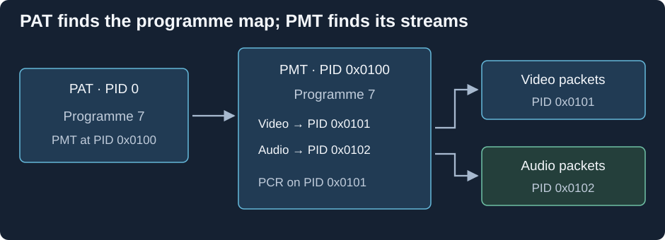

MPEG-TS Program Tables: PAT and PMT
PAT and PMT describe which transport-stream packets belong to each programme and what media those packets carry.
Join a television transport stream halfway through a programme. Packets are arriving with many different PIDs, or packet identifiers. The receiver needs to learn which identifiers belong to the selected service before it can choose video and sound.
The discovery route begins with the Program Association Table (PAT) on PID 0. It maps programme numbers to the PIDs carrying their Program Map Tables (PMTs). Each PMT then describes that programme's components.

Programme 7 and the nonzero PIDs are an example. The PAT's PID 0 is defined by MPEG systems.
Programme discovery: PAT, PMT, and component PIDs
- Filter packets on PID 0 and assemble the PAT section.
- Find programme 7's entry: its PMT is carried on PID 0x0100.
- Filter that PID and assemble the PMT.
- Read its components: video at PID 0x0101 and audio at PID 0x0102 in this example.
- Use the stream descriptions and descriptors to route those components to the appropriate decoders.
The transport headers identify packets, while tables describe what their identifiers mean. A PID is an address within this multiplex, not a globally meaningful name for an audio codec. Another recording can use different PIDs for the same kinds of component.
A table section can occupy more than one transport packet. The receiver assembles it using section framing and can check its CRC before accepting the description. Repetition lets receivers discover the structure after joining, and table versions distinguish updated descriptions from repeats of the same information.
A clock and several component timelines
The PMT also names the PID carrying the programme clock reference (PCR). Here it is the video PID. PCR observations help a receiver relate packet delivery to the programme's clock; PTS and DTS then schedule presentation and decoding of the media against timing derived from that system.
PCR need not be on a separate stream with its own pictures or sound. It can be carried in an adaptation field of packets that also belong to a media PID. That separates the clock's role from the audio/video payload's role.
When the programme changes
A service can add an audio component or change its assigned PID. A receiver observing the updated PMT can adjust the set of streams it follows. A short examination containing an old table, or not enough repeated signalling, can give an incomplete view.
This is useful when inspecting a television recording for Emby. A transport file can preserve multiple programme groupings, and the first video found is not automatically the wanted service. Programme-aware inspection follows the same hierarchy: programme identity, its component PIDs and descriptions, then the properties of the selected media.
The programme number is a systems grouping. The film or episode name displayed in a library is descriptive information at another layer.